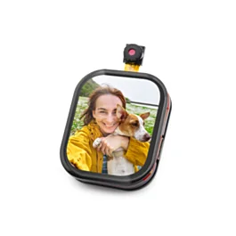

MaTouch ESP32-S3 AMOLED AI CAMERA
Makerfabs
MaTouch ESP32-S3 AMOLED AI CAMERA is a 2.05" 368x448 ESP32 display board by Makerfabs based on the ESP32-S3 with 16MB flash, 8MB PSRAM.
Features, ports & interfaces
- 8 MB PSRAM
- 16 MB flash
- Wi-Fi 4 (802.11 b/g/n, 2.4 GHz) – version from the ESP32-S3 datasheet
- Bluetooth 5 (LE) – version from the ESP32-S3 datasheet
- Camera: OV3660
Specifications
| Parameter | Value | Source |
|---|---|---|
| Screen size | 2.05" | source |
| Resolution | 368x448 | source |
| Shape | Rectangular | |
| Display driver | CO5300，QSPI | source |
| Touch controller | CST820 | source |
| MCU / SoC | ESP32-S3， 16MB Flash，8MB PSRAM | source |
| MCU family | ESP32-S3 | source |
| Flash | 16MB | source |
| PSRAM | 8MB | source |
| Wi-Fi | WiFi& Bluetooth 5.0 | source |
| Bluetooth | Bluetooth 5.0 | source |
| USB | 1 * USB_native | source |
| Category | Makerfabs MaTouch | |
| Camera | OV3660 | source |
| Display | 2.05", 368x448 resolution | source |
| Power consumption | USB Type-C 5.0V(4.0V~5.25V) | source |
| Vendor | Makerfabs |
Official links & documentation
Notes
- Auto-added by the monthly scraper on 2026-11-24 from the official product page; values are copied verbatim from that page, fields it does not state are empty. Not yet hand-reviewed.